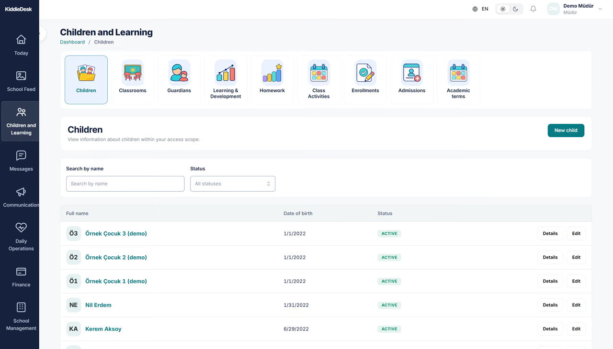

01 · KIDDIEDESK
Where it began: a conversation with a teacher
The idea for KiddieDesk did not begin in a roadmap meeting. It began in a conversation with a friend who worked as a schoolteacher.
She described the everyday friction of communicating with parents: passing on updates, keeping information accurate and managing requests alongside an already busy classroom day. She also showed me an early-stage application her school had been asked to use. It was supposed to help, but its limitations and inaccuracies created new questions instead of resolving the old ones.
I could see an opportunity larger than improving a messaging screen. What if teachers, families and school leaders could work from a connected view of the same school day—without forcing every role into the same interface?
That question became the starting point for KiddieDesk, a product we developed at VenusSoft to help nurseries and preschools connect everyday operations, child-specific information and family communication.
My starting insight: The problem was not simply that schools needed another app. They needed reliable information to move between the right people, at the right moment.
02 · KIDDIEDESK
Discovery: listen before deciding what to build
Rather than jumping into features, I worked closely with teachers, parents and the school that could become our first customer. I held conversations and interviews to understand the work people were already doing, where information broke down and what each person needed to trust the system.
The needs were different, but deeply connected. Teachers needed practical ways to record attendance, daily activities and care without turning documentation into a second job. Parents needed timely, child-specific information they could rely on. School managers needed visibility across classes, children, communications and administrative processes. Platform operators would eventually need a sustainable way to support more than one school.
I mapped the user journeys and the points where those roles exchanged information. This helped us identify a central product principle: different experiences, connected through a consistent child and family record.
What I owned in discovery
- Stakeholder conversations and user interviews with teachers, parents and the prospective customer school.
- User and role mapping, journey flows, initial feature definition and product direction.
- Translating findings into functional and non-functional requirements that the design and engineering teams could work with.
- Building a product vision that could grow beyond one school's immediate request.

03 · KIDDIEDESK
The product vision: one child, many connected workflows
A preschool day is full of small but important events: a child arrives, a teacher records attendance, lunch is served, a parent receives an update, medication may need approval, and an authorised adult collects the child. When these actions are tracked in separate spreadsheets, chats or disconnected applications, people lose context.
KiddieDesk was designed around a shared child-and-family context, with access tailored to each role. Our product direction brought school administration, day-to-day care, family communication and sensitive operational workflows into a single platform model.
Three experiences, one connected product
For teachers — make the school day easier to manage. Class overview, attendance, daily records and communication should fit the rhythm of teaching, not interrupt it.
For parents — make the child's day easier to understand. A mobile experience can bring together relevant daily updates, meals, activities and important notices without exposing another family's information.
For school leaders — make operations easier to coordinate. A school-facing web dashboard brings together student information, daily work and communication in a coherent workspace.


These are published product/demo visuals. The MVP is in active use at one school, but these images do not establish that each individual depicted module is currently in production.
04 · KIDDIEDESK
Scope: make the MVP useful before making it broad
The challenge with a multi-role platform is that every stakeholder can suggest a different “must-have.” My job was to turn a wide set of requirements into connected journeys the team could reason about, prototype and deliver incrementally.
I focused the product definition around three linked domains: school context, daily care and family communication. I broke those into flows, functional requirements, non-functional considerations and acceptance criteria, then discussed priorities and dependencies with the customer and delivery team.
The product also involved scenarios where a vague requirement would not be good enough. Two especially important examples from the documented product design were:

Safe pick-up and handover.
A child's departure is not the same event as attendance or a door access record. The design distinguishes an authorised collector from the actual staff-confirmed handover, including what happens if an approval changes before collection.
Health, meals and access to personal information.
Medication requests need school review and traceable recording; meal information must handle allergy and intolerance distinctions; parents and teachers should only see records within their child or class scope. These situations shaped our requirements for clarity, permissions and reliable state changes.
These examples demonstrate the depth of the product specification, not a claim that every rule was available in the first school’s MVP. I also defined a subscription-based commercial model so the SaaS product could ultimately support additional schools.
05 · KIDDIEDESK
From interviews to an interactive product
Once the journeys and specifications were clear enough to test, I moved the ideas into interactive prototypes. I prepared the documentation needed to reduce ambiguity—flows, detailed functional and non-functional requirements, and the expected behavior of each role—then used prototyping tools, including AI-assisted tools, to create experiences stakeholders could click through.
These prototypes changed the quality of our conversations. A teacher could react to how a daily task would actually work. A parent could understand what they would see. The school could respond to an experience rather than a static list of features. I incorporated feedback, clarified edge cases and refined the scope before and during handoff to UI/UX and engineering.
The prototypes were a product-management and validation tool. I was responsible for defining and aligning the experience, not claiming that I personally developed the production application.


VenusSoft product/demo imagery.
06 · KIDDIEDESK
Wearing three hats: product, project and release management
KiddieDesk required more than discovery and feature definition. I stayed involved across the delivery lifecycle, balancing what the product should become with what the team needed to deliver next.
Product management
Owned the problem framing, research synthesis, vision, roles and journeys, feature definition, requirements, acceptance criteria and MVP priorities.
Project management
Coordinated customer, design and development discussions; clarified dependencies, requirements and priorities; kept the implementation connected to the agreed scope.
Release management
Coordinated release preparation and scope alignment through delivery of the MVP, including stakeholder validation and initial-school rollout. The MVP is confirmed to be in use at one school; specific dates, channels, usage counts and performance metrics are not claimed.
One of the main decisions was to preserve a connected product model without making the experience overwhelming: school data needed shared context, but each role needed its own relevant view. As the work progressed, I helped keep that distinction clear in the user flows, prototypes and delivery conversations.
- Conversations
- User journeys
- Requirements
- Interactive prototypes
- Customer validation
- Design & development
- MVP delivery
- One school in active use
Work process — not a dated release timeline.

07 · KIDDIEDESK
From an idea to a school actually using the MVP
The most meaningful milestone is that KiddieDesk’s MVP has been delivered and is actively used by one school. What began with a teacher describing a communication problem has become a product that operates in a real school environment—not just a prototype or a collection of design screens.
For me, that transition matters because it represents the full arc of product ownership: listening to users, making scope decisions, turning needs into implementable requirements, testing the experience with stakeholders and coordinating the team through delivery. Our next ambition is to expand the user base to additional schools, learning from the first deployment as we prepare to scale.
This is an adoption milestone, not a claim of quantified impact. We have not supplied data to establish time saved, family engagement rates, additional school adoption, subscription revenue or specific module-by-module usage.
MVP delivered · Actively used by one school · Expansion planned.
08 · KIDDIEDESK
Beyond KiddieDesk: building a better experience for education
I do not see KiddieDesk as the end of the vision. At VenusSoft, the longer-term ambition is to build a family of education-focused products that makes everyday education workflows more connected and less burdensome.
KiddieDesk is one practical starting point: understand what educators struggle with, give families more clarity and help schools spend less time coordinating disconnected information. As we learn from schools, that product thinking can inform other tools across the education experience. This is a direction for the future, not a claim that a wider product suite has already launched.
The vision: Technology should remove friction around education, so teachers can spend more time teaching and families can feel more connected to their children's day.
09 · KIDDIEDESK
What I took away
KiddieDesk reminded me that valuable product ideas often begin with something small: listening carefully to someone who is doing the work every day. The difficult part comes next—understanding different perspectives, deciding where to focus, writing requirements clear enough to build against and staying accountable when the work moves into delivery.
For me, this is the story of taking ownership of a product early, keeping its users at the center and carrying the idea through the stages needed to become something real.